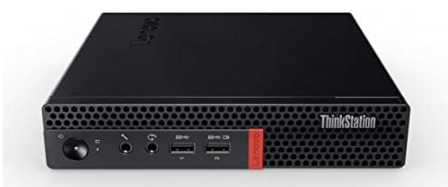
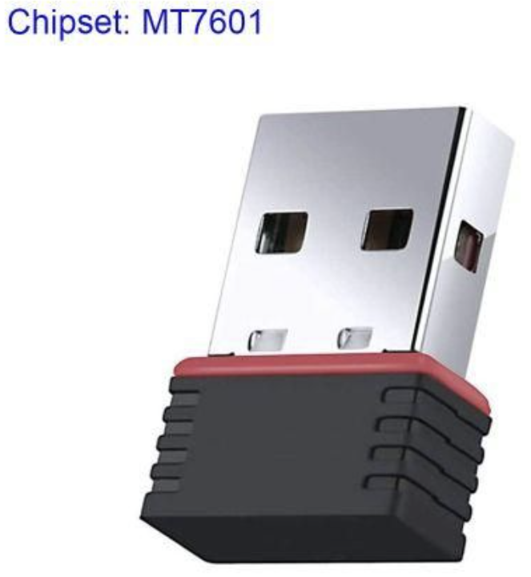
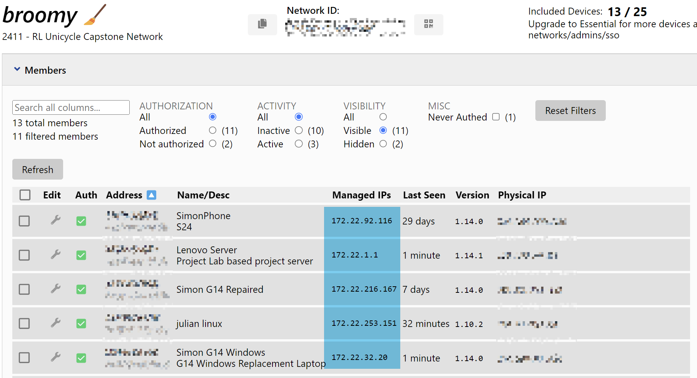
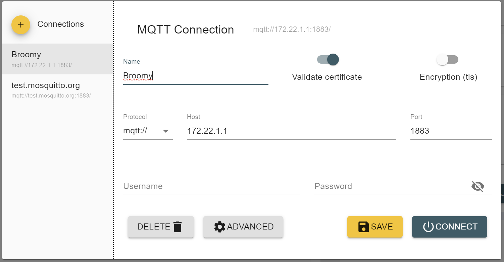
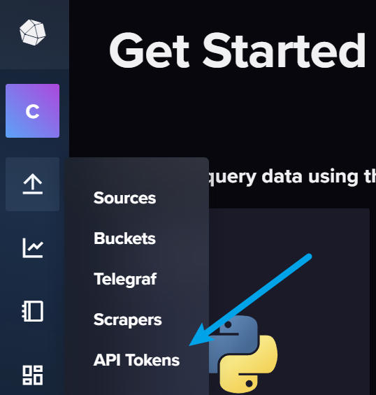
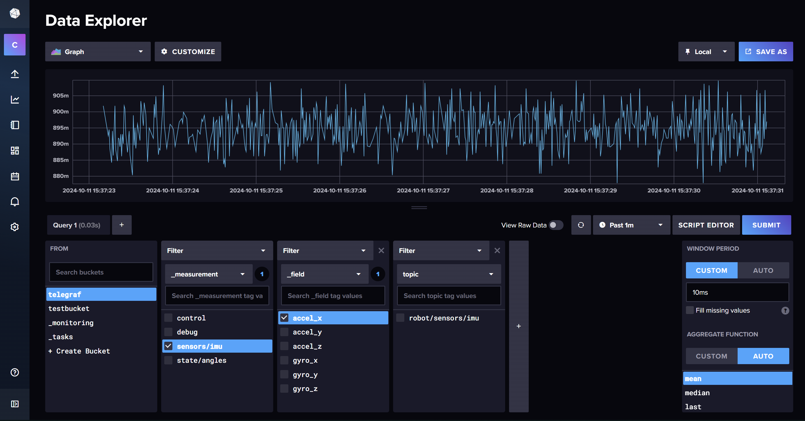
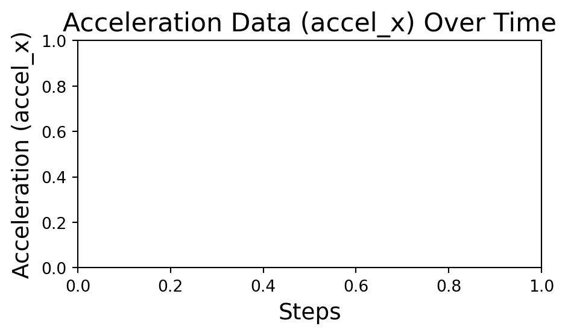
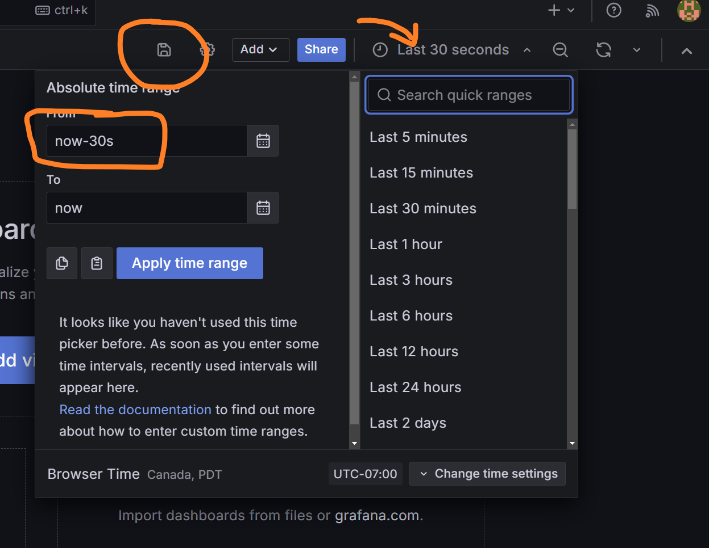
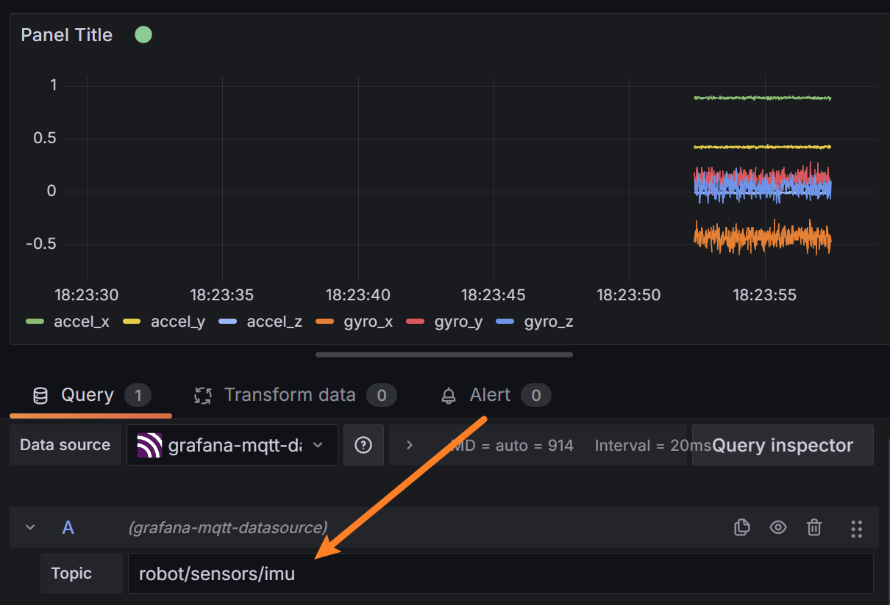
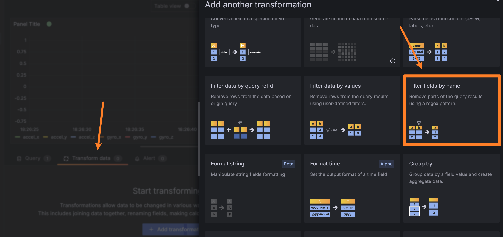

flowchart TD
%% Customizing colors for subgraphs and nodes
style Robot fill:#E3F2FD,stroke:#90CAF9,stroke-width:2px
style Server fill:#FFF8E1,stroke:#FFCC80,stroke-width:2px
style Clients fill:#F1F8E9,stroke:#A5D6A7,stroke-width:2px
Y[Robot]
Z[Server]
%% Define a class for black text
classDef blackText fill:none,color:#000,stroke:none;
subgraph Robot
A[IMU Sensors] -->|Data| D(Control Loop)
B[Motors] <-->|Feedback| D
C[Controller] <-->|Commands| D
D <--> E(Communication Multiprocess)
end
subgraph Server
E <--> F[MQTT Broker]
F -->|Metrics| G[Telegraf]
G -->|Write| H[InfluxDB]
F -->|Visualization| I[Grafana]
end
%% Clients section coloring applied to individual floating nodes
I -->|Live Telemetry| J[Dashboard]
K[Node-RED] -->|Commands| F
L[Xbox Controller] -->|Commands| F
H -->|Data| M[Data Explorer and API]
%% Styling for the floating client items
style J fill:#F1F8E9,stroke:#A5D6A7,stroke-width:2px
style K fill:#F1F8E9,stroke:#A5D6A7,stroke-width:2px
style L fill:#F1F8E9,stroke:#A5D6A7,stroke-width:2px
style M fill:#F1F8E9,stroke:#A5D6A7,stroke-width:2px
style Y fill:#E3F2FD,stroke:#90CAF9,stroke-width:2px
style Z fill:#FFF8E1,stroke:#FFCC80,stroke-width:2px
Telemetry and Database Systems for Capstone Projects
A build guide
Purpose
This guide provides a comprehensive overview of the telemetry and database systems employed in our “Learning to Balance” reinforcement learning unicycle project. It includes hardware recommendations, a detailed explanation of the networked services used, and example code to illustrate software implementation.

The telemetry and database system functions as a two-way pipeline controlling the flow of data from sensors, motors, and control decisions. Data from the robot is efficiently offloaded to a server, considering limited processing power and the necessity for a stable control loop. The server further processes this data and manages control signals sent back to the robot for parameter adjustments or commands. By utilizing a central server and internet connectivity, the database, live telemetry, and control panel can be accessed from any networked computer via a browser or software API, globally.
Prerequisites
This guide assumes familiarity with running commands on a Linux command line and access to a terminal on your client device (e.g., personal laptop). This could be through WSL or VSCode on Windows, or a terminal on a Mac or Linux machine.
Basic understanding of Python is recommended, as some examples use Python. However, the same libraries are available in other languages such as C++.
Hardware Recommendation and Requirements
Server
We recommend the Lenovo M900 series of refurbished tiny PCs as an affordable option that meets the computational needs for a server. The device’s SSD was set to dual boot into Linux Ubuntu 22.04 to run the server. This type of device is capable of handling the computational load of running multiple services simultaneously, including database management, messaging, and control services. It can also serve as a workstation for the team.
We tested the Raspberry Pi 4B 8GB with an external SSD, but its processing power is at the limit for these requirements. Therefore, it is not recommended for use as a server, especially considering the cost-effectiveness of a refurbished Lenovo.


Robot Wi-Fi
Our robot uses an NVIDIA Jetson Nano 4GB, which does not include built-in Wi-Fi. Additionally, a real-time (PREEMPT_RT) patch has been applied to our Linux kernel. Many Wi-Fi dongle drivers are incompatible with the low-level kernel changes made by the patch; for example, the rtl8188EUS driver stopped working after the patch.
We recommend the MT7601U chipset USB Wi-Fi dongle, which works without the need for additional drivers on Ubuntu 22.04, Ubuntu 16.04 PREEMPT-RT, and Raspbian. This dongle is reliable for use with outdated and/or patched Linux kernels, is inexpensive, and can be found on Amazon or Aliexpress.
Telemetry Services Overview
The telemetry and control command communications are managed through a series of services running on a central server. Client devices, the server, and the robot are all visible to each other through a virtual network managed with ZeroTier. This allows for secure communication between devices over the internet without exposing their IP addresses to the public.
The principal components of the software stack are as follows:
|
|
|
|
|
|
|
|
|
|
A simplified flowchart of the system is shown below:
We will now examine each of these services and how to configure them for a robotics project.
ZeroTier Virtual Network
ZeroTier allows all authorized devices on the network to communicate directly using assigned virtual IP addresses, similar to running a local network over a Wi-Fi router.
IP Addresses: When a website address is entered into a browser, the request is sent to a Domain Name Server (DNS), which translates the address into an IP address—a unique identifier that functions like a postal address, marking the exact location of a server on the internet. For example:
❯ ping google.com
PING google.com (142.251.33.78) 56(84) bytes of data.
64 bytes from sea09s28-in-f14.1e100.net (142.251.33.78): icmp_seq=1 ttl=114 time=21.6 msThe Google webpage can be accessed by typing the IP address directly into the browser. The number is a unique identifier for that server on the internet.
Public and Private IP Addresses: The IP protocol reserves certain ranges of IP addresses for pivate networks. For example, the entire block of addresses 192.168.0.0 – 192.168.255.255 do not point to the wider internet but is reserved for local devices. This is why home routers can all have the same common IP address of 192.168.0.1 without creating any conflicts. It acts as a local addressing system, like apartment numbers in a building.
Network Ports: Ports differentiate between different services running on the same IP address. For example, a web server might run on port 80, while an email server might run on port 25. When entering a website address, the browser automatically connects to the server on port 80. To connect to a different service, you can specify the port using a colon, e.g., http://172.22.1.1:8086/ connects to port 8086 which is commonly used for InfluxDB.
Local Host: The IP address http://localhost s a special address that points to the local machine. It is used to access services running on the same machine without needing to know the IP address.
The clients on the ZeroTier network connect to the robot and server using their assigned virtual IP addresses managed by the ZeroTier service.
Setting up ZeroTier Network
To setup a network you should first create a free account at https://my.zerotier.com/. It is advisable to set up a team email so that any team member can log in to manage the network as needed. Once you have an account, you can create a network and add devices to it. The network ID is a 16-digit number used to identify the network.
ZeroTier Client Setup
Every device intended to be part of the network – including laptops, the server, and the Jetson – should have the ZeroTier client installed. After installation, enter the network ID from the ZeroTier website into the client, and approve the device to join the network. Assign static IP addresses, especially for critical devices like the server. This can be managed via the ZeroTier website.
Installation Instructions: Download the ZeroTier client here.
Steps:
Download and Install the ZeroTier client for your operating system:
Start the ZeroTier service:
On Windows:
- Open the ZeroTier client, which will add an icon to the system tray.
- Right-click on the icon and select
Join Network, then enter the network ID. - Set the client UI to launch on startup.
On Linux: Run the following commands:
sudo systemctl enable zerotier-one sudo systemctl start zerotier-one sudo zerotier-cli join YOUR_NETWORK_ID
Approve the device:
Take note of the client ID and either log into the ZeroTier website or use the command-line interface to approve the device for network access.Verify the connection:
After approval, you can verify the connection by pinging another connected device on the network using its assigned virtual IP address.Assign a static IP (optional):
For important devices like the server or the Jetson, assign static IP addresses through the ZeroTier web console under the Members tab. This ensures consistent IP allocation across reboots.
Managing IP Addresses
Below is an example of a ZeroTier network where the server has been assigned the static IP address 172.22.1.1 on the network:

Connecting to Robot Controller using SSH
With the virtual network established, you can enable remote access to the robot controller via SSH. SSH is a secure shell protocol that allows you to run command-line commands on a remote device. This is very useful for managing the robot, running scripts, and updating software code. Use the virtual IP address assigned to the robot on the ZeroTier network. It is recommended to assign a static IP address using the ZeroTier UI or CLI so that the address does not change between reboots.
For faster access to SSH devices, consider setting up an alias or an SSH key once SSH is verified working for a device. More information on SSH can be found here
Example: Our robot has the static ip address 172.22.0.5. To connect from a linux terminal on a computer connected to the private network with zerotier client installed, run the following command:
ssh jetson@172.22.0.5This will attempt to log in to the username jetson on the robot controller, prompting for the user password (the same as if logging in directly on the robot). For a controller running Linux, we recommend setting up different users on the system so that each team member can log in to their own account and manage their own files and credentials. Software between user accounts can be shared using symbolic links to a central repository or using GitHub to manage individual software branches.
VSCode Server
The Jetson is also able to handle VSCode Server (https://code.visualstudio.com/docs/remote/ssh), although the outdated Ubuntu 16.04 requires running an older version of the VSCode IDE to SSH in. Be aware that VSCode Server is active on the Jetson when SSHed in, which consumes some system resources; however, in practice, it has not been a performance issue. For best performance, running the robot through a simple terminal is recommended. The benefit of SSHing through VSCode is that it provides a GUI interface for software development and file management on the robot, as if you were using VSCode on your own computer.
MQTT Overview
MQTT is a lightweight messaging protocol that provides an efficient and cost-effective method for telemetry-based communication between devices. MQTT messages are routed through the Lenovo server acting as the broker using Mosquitto. The robot can publish data to a topic, which can be picked up by various subscribers such as Grafana or other laptops and devices connected to the broker and subscribed to the topic. Similarly, commands can be sent back to the robot via a command topic to turn it on or off or adjust parameters. The default port for MQTT is 1883.
For setup, installation, and maintenance of the broker, we recommend installing MQTT Explorer on any device connected to the network. This allows for monitoring all messaging and client connections across the system.
Download from MQTT Explorer
Key Features of MQTT
| Feature | Description |
|---|---|
| Lightweight Protocol | Ideal for constrained devices and networks with limited bandwidth. |
| Publish-Subscribe Model | Allows devices to publish messages to a topic and any client subscribed to that topic will receive the messages. |
| Reliable Message Delivery | Offers various levels of Quality of Service (QoS) to guarantee message delivery. |
| Minimal Overhead | Adds only a small overhead to each message, ensuring efficient use of network resources. |

Installing Mosquitto MQTT Broker
From the server open a terminal and run the following commands to install the MQTT broker:
sudo apt update
sudo apt install mosquitto mosquitto-clients
sudo systemctl enable mosquitto
sudo systemctl start mosquittoAfter installation, open MQTT Explorer and connect to the broker using the IP address of the server and the default port. You should see the server as a client connected to the broker.

Once connected, some test messages can be sent through the GUI and verified that they are being received by the server.
For more detailed instructions or help, consider using additional resources or consult the Mosquitto documentation.
Interfacing with Software
MQTT interfaces with Python, Node-RED, and Grafana to provide a network of communication topics. The broker can be accessed by any device on the ZeroTier network; messages can be sent to a topic, or actions can be taken based on a message received from a topic.
Below is an example Python script for publishing messages to the MQTT broker. This script publishes a test message to the topic jetson/telemetry every second. Note that the two key components of a successful message are the topic and the message payload. The topic is the address to which the message is sent, and the payload is the data being sent. The payload can be a string, a number, or a JSON object. For our project, we use JSON objects to send data.
The package is installed using pip: pip install paho-mqtt
import json
import time
import paho.mqtt.client as mqtt
import random
# Define the MQTT settings
broker_address = "172.22.1.1" # Lenovo's IP address (replace with your broker IP)
port = 1883
topic = "jeston/telemetry"
# Create an MQTT client instance
client = mqtt.Client()
# Define the callback for receiving messages
def on_message(client, userdata, message):
print(f"Message received on topic {message.topic}: {message.payload.decode()}")
# Define the callback for connecting to the broker
def on_connect(client, userdata, flags, rc):
print("Connected to broker with result code " + str(rc))
# Subscribe to the topic when connected
client.subscribe(topic)
# Assign the callbacks
client.on_message = on_message
client.on_connect = on_connect
# Connect to the broker
client.connect(broker_address, port)
# Start the loop to process messages
client.loop_start()
# Publish some test messages to the topic every second
try:
range(3)
for i in range(3):
message = {"sensor": "temperature", "value": 20 + random.random() * 5}
client.publish(topic, json.dumps(message))
print(f"Published message: {message}")
time.sleep(1)
except KeyboardInterrupt:
print("Exiting...")
# Stop the loop and disconnect
client.loop_stop()
client.disconnect()Published message: {'sensor': 'temperature', 'value': 20.3095790384297}C:\Users\sghys\AppData\Local\Temp\ipykernel_15800\406674647.py:12: DeprecationWarning: Callback API version 1 is deprecated, update to latest version
client = mqtt.Client()Connected to broker with result code 0
Published message: {'sensor': 'temperature', 'value': 23.604692472457177}
Message received on topic jeston/telemetry: {"sensor": "temperature", "value": 23.604692472457177}
Published message: {'sensor': 'temperature', 'value': 22.55116248680919}
Message received on topic jeston/telemetry: {"sensor": "temperature", "value": 22.55116248680919}<MQTTErrorCode.MQTT_ERR_SUCCESS: 0>In this demo script, the client is both publishing and subscribing to the same topic. In practice, we use multiple topics for different data streams and commands. A more advanced implementation for assigning topics and managing data can be found in our repository: RLUnicycle
This test script is useful for publishing test data when it comes to verifying the installation of InfluxDB and Grafana ahead.
We are now at this stage in the setup:
flowchart TD
%% Customizing colors for subgraphs and nodes
style Robot fill:#E3F2FD,stroke:#90CAF9,stroke-width:2px
style Server fill:#FFF8E1,stroke:#FFCC80,stroke-width:2px
style Clients fill:#F1F8E9,stroke:#A5D6A7,stroke-width:2px
Y[Robot]
Z[Server]
%% Define a class for black text
classDef blackText fill:none,color:#000,stroke:none;
subgraph Robot
E(Jetson)
end
subgraph Server
E <--> F[MQTT Broker]
end
%% Clients section coloring applied to individual floating nodes
K[Python Script] -->|Commands| F
L[Laptop] -->|SSH| E
L -->|MQTT Explorer| F
L --> K
%% Styling for the floating client items
style K fill:#F1F8E9,stroke:#A5D6A7,stroke-width:2px
style L fill:#F1F8E9,stroke:#A5D6A7,stroke-width:2px
style Y fill:#E3F2FD,stroke:#90CAF9,stroke-width:2px
style Z fill:#FFF8E1,stroke:#FFCC80,stroke-width:2px
Telegraf and InfluxDB
Telegraf and InfluxDB are free and open-source products from InfluxData. Telegraf is driven by a configuration file that organizes incoming data from multiple sources for processing and forwarding into the InfluxDB database. InfluxDB is a time-series database used to store telemetry data streamed from the robot. It features a web browser interface for data exploration and APIs in Python and other languages for database queries.
Follow the instructions in the links above to install both services on the server.
InfluxDB Configuration
The InfluxDB database can be accessed through a web browser by navigating to the IP address of the Lenovo server on port 8086. For example, http://172.22.1.1:8086/. A login process will establish a username, password, and organization. The organization is simply a way to group data together across users. A bucket is a way to group data together within an organization. For our database we have assigned the organization name as Capstone and the bucket name as telegraf but these are free to choose. Once the organization and bucket have been created, the database is ready to receive data.
Telegraf Configuration
The Telegraf configuration file is located at /etc/telegraf/telegraf.conf by default. The default configuration is extensive, with many lines commented out. It is advisable to back up the original file and then remove unnecessary commented lines for clarity.
Telegraf acts as a central messaging switchboard. To utilize it, we need to connect the MQTT topics into the switchboard and connect the output to the InfluxDB database for storage. The main changes suggested from the default configuration are:
- Remove the logging of server stats from the pool of inputs.
- Add the MQTT input plugin to the configuration file.
- Add the InfluxDB output plugin to the configuration file.
A simplified header is shown below:
# Default Header
[global_tags]
# Configuration for telegraf agent
[agent]
## Default data collection interval for all inputs
interval = "10s"
round_interval = true
metric_batch_size = 1000
metric_buffer_limit = 10000
collection_jitter = "0s"
flush_interval = "10s"
flush_jitter = "0s"
precision = ""
## Override default hostname, if empty use os.Hostname()
hostname = ""
## If set to true, do no set the "host" tag in the telegraf agent.
omit_hostname = true
Now, add InfluxDB as an output plugin and MQTT as an input plugin. The MQTT plugin listens to messages on particular topics, and the InfluxDB plugin writes the data to the database. The configuration for the InfluxDB output plugin is shown below.
Note the token above can be generated through the InfluxDB web interface.
[[outputs.influxdb_v2]]
# localhost assumes telegraf and influxdb are on the same server
urls = ["http://localhost:8086"]
token = "api token from InfluxDB"
organization = "Capstone"
bucket = "telegraf"
[[outputs.prometheus_client]]
listen = ":9273"
metric_version = 2Finally the incoming messages from MQTT are processed. A very important consideration here is to fully automate the process of message conversion from JSON to adopt a robot-driven database. The core principle is that changes in the robot software and telemetry should not change either this configuration file or the database schema. In our case, all messages that are to be databased start with robot/ and the topic indicates the data category. For example robot/imu1 is the MQTT topic that recieves information on the imu sensor
{ax: 0.1, ay: 0.2, az: 0.3, gx: 0.4, gy: 0.5, gz: 0.6}Telegraph identifies that this is to be databased, removes the robot/ prepend, records the json message _measurement as imu1 and the _field as ax, ay, az, gx, gy, gz.
[[processors.starlark]]
source = '''
def apply(metric):
# Get the topic tag value (e.g., "robot/motor")
topic = metric.tags.get("topic")
# Extract the part after "robot/"
if topic.startswith("robot/"):
measurement = topic.split("robot/", 1)[1]
# Set the new measurement based on the tail of the topic
metric.name = measurement
return metric
'''
# MQTT Consumer Input Plugin
[[inputs.mqtt_consumer]]
servers = ["tcp://localhost:1883"]
topics = [
"robot/#" # Subscribe to all subtopics under robot/
]
qos = 0
client_id = "telegraf_mqtt_consumer"
data_format = "json"
## Use a part of the topic or JSON structure as the measurement name.
json_name_key = "measurement"This completes the configuration file. The other components that record server metrics can be removed to keep the database focused.
Testing the Configuration with Data Explorer
Return to the MQTT Python script and send messages to a robot/ topic for testing. They should now be automatically processed into the database as described. Verify that the messages are passing through the MQTT broker, then confirm they are reaching the InfluxDB database using the Data Explorer.

f successful, the Data Explorer will show that the bucket has new data. The measurement filter will display the topic passed to MQTT, the field will show the keys from the passed JSON, and the data will show the values. Note that InfluxDB automatically applies data operations such as aggregation to reduce the number of sample points. This can be managed using the window period on the right-hand side.
InfluxDB has its own query language, which can be previewed by clicking the Script Editor button. This provides direct insight into how the data is processed when a query is sent and can be edited to fine-tune the settings or used as an API call from elsewhere (e.g., from a Python script to create plots).
from(bucket: "telegraf")
|> range(start: v.timeRangeStart, stop: v.timeRangeStop)
|> filter(fn: (r) => r["_measurement"] == "sensors/imu")
|> filter(fn: (r) => r["_field"] == "accel_x")
|> aggregateWindow(every: 100ms, fn: mean, createEmpty: false)
|> yield(name: "mean")The accel_x is being aggregated into 100ms sample periods using the mean of all values in that window. This can be modified to get raw data or changed to a different aggregation function. The range values can also be set to relative times to get the last 10 minutes of data, for example.
from(bucket: "telegraf")
|> range(start: -10m)
|> filter(fn: (r) => r["_measurement"] == "sensors/imu")
|> filter(fn: (r) => r["_field"] == "accel_x")Building these queries through the script editor is a good way to get the correct string to use in a Python script to query the database.
Example Python Query
To illustrate how this can be integrated into Python for data analysis, here is a simple example. This script queries the last one minute of data from the database and plots the acceleration data over time.
import pandas as pd
import seaborn as sns
import matplotlib.pyplot as plt
from influxdb_client import InfluxDBClient
# Server IP address with InfluxDB port
url = "http://172.22.1.1:8086"
token = "gGu-3t4Avltf6-yHamGXItRfOKBQIDLgWEfhdURE7wURQazK_yvIa8O9k0O-_doXX8Q0Acy82vVavb5AcM2Lhw=="
org = "Capstone"
bucket = "telegraf"
client = InfluxDBClient(url=url, token=token, org=org)
# Query for the last 10 minutes of data
last_mins = 1
query = f'''
from(bucket: "{bucket}")
|> range(start: -{last_mins}m)
|> filter(fn: (r) => r["_measurement"] == "sensors/imu")
|> filter(fn: (r) => r["_field"] == "accel_x")
|> aggregateWindow(every: 1s, fn: mean, createEmpty: false)
'''
# Query the data
query_api = client.query_api()
tables = query_api.query(org=org, query=query)
# Extract values (accel_x) from query response
values = [record.get_value() for table in tables for record in table.records]
# Plot using Seaborn
plt.figure(figsize=(5, 3))
sns.lineplot(data=values, linewidth=2.5)
# Customize plot
plt.title('Acceleration Data (accel_x) Over Time', fontsize=16)
plt.xlabel('Steps', fontsize=14)
plt.ylabel('Acceleration (accel_x)', fontsize=14)
plt.tight_layout()
# Display the plot
plt.show()
This concludes the setup of the MQTT, Telegraf, and InfluxDB services. The next step is to setup Grafana for live telemetry and database dashboards.
At this stage in the setup, the system architecture is as follows:
flowchart TD
%% Customizing colors for subgraphs and nodes
style Robot fill:#E3F2FD,stroke:#90CAF9,stroke-width:2px
style Server fill:#FFF8E1,stroke:#FFCC80,stroke-width:2px
style Clients fill:#F1F8E9,stroke:#A5D6A7,stroke-width:2px
Y[Robot]
Z[Server]
%% Define a class for black text
classDef blackText fill:none,color:#000,stroke:none;
subgraph Robot
E(Jetson)
end
subgraph Server
E <--> F[MQTT Broker]
F -->|Metrics| G[Telegraf]
G -->|Write| H[InfluxDB]
end
%% Clients section coloring applied to individual floating nodes
K[Python Script] -->|Commands| F
L[Laptop] -->|SSH| E
L -->|MQTT Explorer| F
L --> K
H -->|Data| M[Data Explorer and API]
%% Styling for the floating client items
style K fill:#F1F8E9,stroke:#A5D6A7,stroke-width:2px
style L fill:#F1F8E9,stroke:#A5D6A7,stroke-width:2px
style M fill:#F1F8E9,stroke:#A5D6A7,stroke-width:2px
style Y fill:#E3F2FD,stroke:#90CAF9,stroke-width:2px
style Z fill:#FFF8E1,stroke:#FFCC80,stroke-width:2px
Grafana Live Telemetry
Grafana is a powerful open-source platform for creating dashboards and visualizing time-series data. Grafana supports a wide range of data sources and can display both live and historical data. While it can refresh data from InfluxDB at a rate of every 5 seconds, this is too slow for live monitoring of a dynamic system. Instead, live telemetry is pulled directly from the MQTT broker.
To begin, download and install Grafana on the server. The default port for Grafana is 3000. Once installed, open up a web browser and navigate to http://localhost:3000/ to access the Grafana dashboard. The default login is admin with the password admin.
Adding Data Sources
Grafana needs to be configured with data sources:
InfluxDB Data Source:
- The InfluxDB data source is included by default as a plugin.
- Specify the correct query language and provide the necessary credentials and address (
http://localhost:8086).
MQTT Data Source:
- To view MQTT data in real time, install a plugin to connect Grafana to the Mosquitto broker: MQTT Datasource Plugin.
- In Grafana, navigate to Configuration > Data Sources > Add data source.
- Select MQTT from the list of available data sources.
- Name the data source and specify the connection to the MQTT broker (
tcp://localhost:1883). - Add a username and password if configured for the broker.
Creating Dashboards and Panels
Now it is time to setup a dashboard, a collection of data panels. The Grafana interface is user friendly, but we are interested in some key settings.
- The window of time that is being displayed in the dashboard.
- The MQTT topics that are being fetched for display.
- The keys from the JSON that are being displayed.
For this stage, it is recommended to either have a robot sensor streaming data, or a surrogate Python script sending out data to the MQTT broker so that there are live streaming messages to display.

Step 1: Create a New Dashboard
- Log into the Grafana homepage from any device connected to the private network using the server IP:
http://172.22.1.1:3000/. - Navigate to Dashboards and select New Dashboard.
- Save the new dashboard. Remember to save periodically to avoid losing changes.
- Adjust the time range of the dashboard to the last 30 seconds to see recent data streaming in. Apply the time range.

Step 2: Add a Visualization Panel
- Select the Add a visualization button to make the first panel.
- Enter the MQTT topic and verify that data is streaming using MQTT Explorer.
- The data should begin streaming in the panel preview.
- Use the Query Inspector and Data tab to verify that data is being received and processed correctly if the visualization is not showing as expected.
Step 3: Customize the Panel
 Select the Transform Data tab and then Filter fields by name option. Fields that are to be omitted can be removed from the identifier list and will not be displayed in the panel. Finally the right hand side of the panel configuration can be used to fully customize the display of data, panel title, etc.
Save and apply the panel change. Now is a good time to bookmark the dashboard for easy access in the future. The live telemetry has limitations in how much data can be displayed at once, since it is sampling from a moving buffer and not storing the data like the database. Too many panels with too much data will cause the system to stutter, so the recommendation is to downsample the data to about 10Hz or less unless full sample resolution is needed.
Notes on Downsampling
As of now, an effective way to downsample the incoming data in Grafana has not been found. Telegraf has some data processing capabilities for downsampling, but it would require rebroadcasting over a new MQTT topic. The simplest solution we have found is to downsample data on the robot side by sending full-resolution data to each of the robot/ topics and every \(n\) th message to a downsampled/ topic. This can be implemented with few lines of code and does not add significant overhead.
At this stage in the setup, the system architecture is as follows:
flowchart TD
%% Customizing colors for subgraphs and nodes
style Robot fill:#E3F2FD,stroke:#90CAF9,stroke-width:2px
style Server fill:#FFF8E1,stroke:#FFCC80,stroke-width:2px
style Clients fill:#F1F8E9,stroke:#A5D6A7,stroke-width:2px
Y[Robot]
Z[Server]
%% Define a class for black text
classDef blackText fill:none,color:#000,stroke:none;
subgraph Robot
E(Jetson)
end
subgraph Server
E <--> F[MQTT Broker]
F -->|Metrics| G[Telegraf]
G -->|Write| H[InfluxDB]
F -->|Visualization| I[Grafana]
end
%% Clients section coloring applied to individual floating nodes
I -->|Live Telemetry| J[Dashboard]
H -->|Data| M[Data Explorer and API]
%% Styling for the floating client items
style J fill:#F1F8E9,stroke:#A5D6A7,stroke-width:2px
style M fill:#F1F8E9,stroke:#A5D6A7,stroke-width:2px
style Y fill:#E3F2FD,stroke:#90CAF9,stroke-width:2px
style Z fill:#FFF8E1,stroke:#FFCC80,stroke-width:2px
Robot Software Architecture
An automated data pipeline now exists between the robot software system and the database and telemetry panel. However, there are considerations when handling data within the robot controller, especially since the control loop is sensitive to timing and delays.
To address these issues, the telemetry handling and output of the robot are separated into a parallel process that is not part of the control loop. Crucially, the process has lower priority and will not interfere or cause delays in the time-sensitive portions of the code.
We follow two core principles in our software implementation:
Data-driven design: The data classes within the robot system dictate the structure of the database and communication topics. IMU data is naturally packaged into a single topic, as is motor data, etc. This approach simplifies data management and ensures correct data processing.
Asynchronous processing: The telemetry process runs on a separate core from the main control loop. In Python, this is achieved using multiprocessing since the Python Global Interpreter Lock (GIL) prevents a single process from running on multiple cores. The two processes communicate through two unidirectional queues: one for data out and one for commands in.
The details of the implementation can be viewed through our repository: RLUnicycle. The multiprocessing with queues are initiated in main.py, data packaging is handled by teledata.py, and the communication thread is handled by mqtt.py.
main.py
The main entry point for the robot handles the asynchronous processes using data queues for input and output to send messages between the control loop and communications:
Code Example: Main entry point for the robot handling asynchronous processes.
Code
import logging
import argparse
import multiprocessing
import asyncio
async def main():
args = parse_args()
setup_logging()
logger = logging.getLogger()
logger.debug("Logger initialized")
try:
set_realtime_priority(priority=99)
except PermissionError as e:
logger.error(f"Failed to set real-time priority: {e}")
return
telemetry_queue = multiprocessing.Queue()
command_queue = multiprocessing.Queue()
shutdown_event = multiprocessing.Event()
# Start the MQTT process
mqtt_process = multiprocessing.Process(
target=start_mqtt_process,
args=(telemetry_queue, command_queue, shutdown_event),
)
mqtt_process.start()
# Initialize and start the robot
robot = RobotSystem(
telemetry_queue,
command_queue,
start_motors=not args.no_motors,
controller_type=args.controller,
config_file=args.config_file,
)
try:
await robot.start(shutdown_event)
except KeyboardInterrupt:
logger.info("Shutdown signal received")
shutdown_event.set()
except Exception as e:
logger.exception(f"An unexpected error occurred: {e}")
finally:
await robot.shutdown()
# Terminate and clean up the MQTT process
shutdown_event.set()
mqtt_process.join(timeout=5)
if mqtt_process.is_alive():
mqtt_process.kill()
logger.warning(
"MQTT process did not terminate gracefully, forcing termination."
)
logger.info("Cleanup complete. Exiting program.")robot/teledata.py
The @dataclass decorator in Python is used to define structures that hold the data in fields. A method to convert them to dictionary/JSON is also included in a TelemetryData base class. A generalist debug data class is also provided to allow for ad-hoc data to be sent to the telemetry system during development that has not been assigned a specific topic. The fields are coupled with the MQTT topic and the database measurement name within the dataclass object.
A sample of the abstract class and a data class for IMU data is shown below:
Code Example: A sample of the abstract class and a data class for IMU data.
Code
from abc import ABC, abstractmethod
from dataclasses import asdict, dataclass, field
from typing import Any, Dict
class TelemetryData(ABC):
"""
Abstract base class for telemetry data. All telemetry sent identifying a topic,
and with the data fields as the labels for the data.
"""
@property
@abstractmethod
def topic(self) -> str:
pass
def get_data(self):
"""
Returns a dictionary of the telemetry data excluding the topic.
Uses asdict() if the subclass is a dataclass.
"""
return asdict(self) # Convert to dictionary without the topic
def to_mqtt(self):
"""
Returns the topic and the data as a tuple (topic, data).
The data does not include the topic field.
"""
return (self.topic, self.get_data()) # Return tuple for sending to MQTT
@dataclass(frozen=True)
class IMUData(TelemetryData):
"""Data returned from the IMU sensor"""
accel_x: float # 1.0 = 9.8 m/s^2
accel_y: float
accel_z: float
gyro_x: float # degrees per second
gyro_y: float
gyro_z: float
@property
def topic(self) -> str:
return "robot/sensors/imu" # Class-level topic
def get_accel(self) -> tuple:
return (self.accel_x, self.accel_y, self.accel_z)
def get_gyro(self) -> tuple:
return (self.gyro_x, self.gyro_y, self.gyro_z)robot/rwip.py
At the end of a control cycle, all data classes are packed into a single list and sent to the telemetry process. Opening the inter-process queue incurs an overhead, so it is more efficient to send one single outgoing packet per control cycle.
Code Example: Packaging of TelemetryData objects into a list and sending them to the telemetry process.
Code
### SEND COMMS ###
data_list = [imudata, euler_angles, control_data, tele_debug_data]
await self._send_telemetry(data_packet=data_list)
async def _send_telemetry(
self, data_packet: Union[List[td.TelemetryData], td.TelemetryData]
) -> None:
"""
Send telemetry data to the telemetry queue.
"""
self.send_queue.put(data_packet)Telemetry Process communication/mqtt.py
The telemetry process is essentially a wrapper around the existing Paho MQTT client. It is designed to unpack the data classes from the incoming queue and send them to their corresponding topics. It additionally handles downsampling the data to a lower rate for the Grafana panels. It has a standby loop that listens for incoming commands over a control topic and routes them to the control cycle through the command queue as needed.
Code Example: Parsing of TelemetryData objects and sending them to the MQTT broker.
Show the code
def telemetry_loop(self):
while not self.shutdown_event.is_set():
try:
while not self.send_queue.empty():
batch = self.send_queue.get()
self.batch_count += 1 # Increment batch counter
if self.batch_count >= self.downsample_rate:
self.batch_count = 0
is_downsampled = True
else:
is_downsampled = False
if isinstance(batch, list):
for telemetry_data in batch:
self.process_telemetry_data(telemetry_data, is_downsampled)
else:
self.process_telemetry_data(batch, is_downsampled)
except Exception as e:
logger.exception(f"Error in telemetry_loop: {e}")
time.sleep(self.loop_time)
def process_telemetry_data(
self, telemetry_data: TelemetryData, is_downsampled: bool
):
# Check that the telemetry data is an instance of the TelemetryData class
if not isinstance(telemetry_data, TelemetryData):
logger.error(f"Invalid telemetry data: {telemetry_data}")
return
try:
topic, data = telemetry_data.to_mqtt()
# Publish to the original topic
self.publish_data(topic, data)
# logger.debug(f"Published to {topic}: {data}")
# If this is a downsampled batch, also publish to the downsampled topic
if is_downsampled:
downsampled_topic = f"downsampled/{topic}"
self.publish_data(downsampled_topic, data)
# logger.debug(f"Published to {downsampled_topic}: {data}")
except Exception as e:
logger.exception(f"Error processing telemetry data for topic {topic}: {e}")
def publish_data(self, topic, data):
self.client.publish(topic, json.dumps(data))
passCommand Management
The established connection with the robot controller also allows for remote commands to be sent in real-time. These commands can adjust tuning parameters or control the robot. We have a control panel that is synchronized across all devices through a web browser using Node-RED.
Node Red
NodeRed is a flow-based, open-source development tool for visual programming developed by IBM. It is used for wiring together hardware devices, APIs, and online services in new and interesting ways. It provides a browser-based editor that makes it easy to wire together flows using a wide range of nodes. In our case, this enables a synchronized control panel accessible through a web browser.
NodeRed can be installed on the server, with default port of 1880.

The Node-RED dashboard allows for the creation of custom dashboards that provide a GUI for the robotics project.
XBox Controller
A controller can be connected through a PC to an MQTT topic using Paho-MQTT and Python. This opens up some interesting avenues for assisted control of the robot.
Conclusion
The setup of the Lenovo server, ZeroTier network, MQTT broker, Telegraf, InfluxDB, Grafana, and Node-RED provides a powerful platform for the development of a capstone project. These services are all open-source and free to use. They are well-documented and have large communities of users that can assist with any issues that may arise.
By following this guide, you should have a robust telemetry and database system for your robotics project.
At this point in the setup, if you have followed the guide, the system architecture is as follows:
Best of luck with your robotics project!